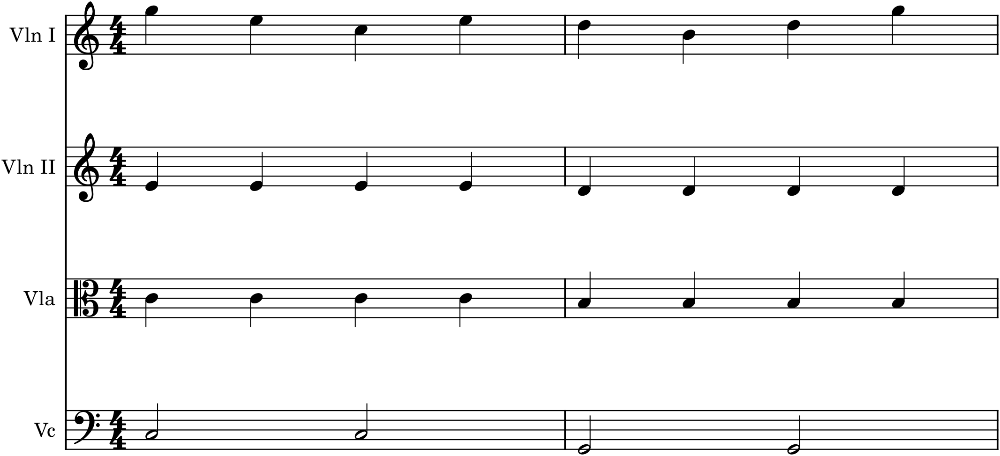
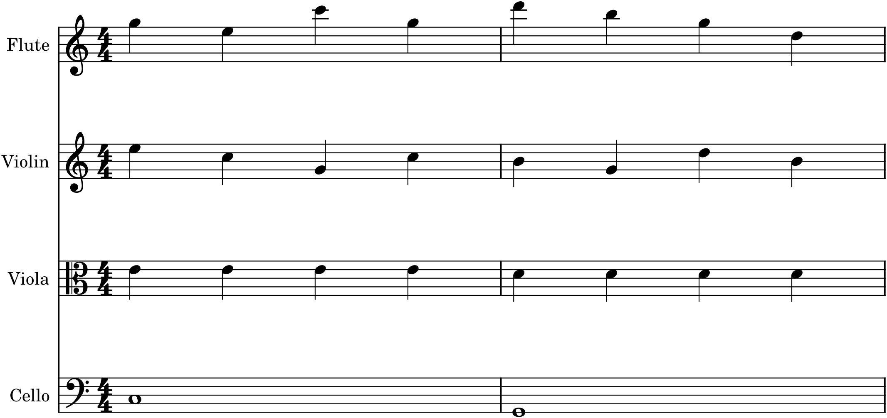

Orchestration begins with a small vocabulary of textures — the basic ways a body of instruments can be arranged. Just as a phrase is built from a handful of cadences and a piece from a handful of forms, an orchestral passage is built from a handful of textures, and knowing them gives you a set of ready shapes to reach for. Most of them you have already met at the scale of one or a few instruments (Parts 3 and 5); this chapter scales them up to the orchestra and adds the one that only a large ensemble can do — layering several textures at once.
36.1Melody and accompaniment
The most common orchestral texture is the one you know best: a melody in the foreground, an accompaniment supporting it beneath. At orchestral scale, each is given its own instruments and colour — the melody in one instrument or a doubled group, the accompaniment in others — and the central challenge is balance: the melody must be clearly heard over everything under it (Chapter 37).

The texture in Figure 36.1 is homophony (Chapter 21) distributed across a section: the tune on top, a rhythmic accompaniment filling the harmony, a bass grounding it. Almost any melody-with-accompaniment you have written can be orchestrated this way — melody to the violins or a wind, accompaniment to the middle strings, bass to the cellos and basses — and it will sound like real orchestral music.
36.2Homophonic blocks
When the whole group plays chords together in the same rhythm — not a melody over accompaniment, but every instrument moving as one — you have a homophonic or chordal texture, the orchestral equivalent of four-part chorale writing (Chapter 14). It is weighty, unified, and grand: a brass chorale, a full-orchestra hymn, a solemn sequence of chords. The whole art here is voicing the chords well across the instruments (Chapter 34) — the bass open and low, the upper voices in their good registers — so the block sounds rich rather than muddy. Homophonic blocks are how the orchestra makes its most massive, direct statements.
36.3Unison and octaves
The most emphatic texture of all is the simplest: the whole orchestra, or a large part of it, playing a single line — in unison, or spread across octaves. There is no harmony to balance, no accompaniment, only one idea sounded by everyone at once, which gives it tremendous force and clarity. The great unison openings and climaxes in the repertoire use exactly this: strip away the parts, put everyone on the melody, and the effect is overwhelming. Octave doublings (Chapter 34) spread that single line across the orchestra’s full range for maximum brilliance and weight. Use it sparingly, for arrivals and declamations, and it never fails.
36.4Contrapuntal textures
At the opposite extreme from unison is counterpoint (Chapter 28) at orchestral scale: several independent melodic lines sounding at once, each in its own instrument or colour. This is the richest and most demanding texture — a fugue for orchestra, or simply two or three real melodies woven together — and its special challenge is clarity: with several lines competing, the orchestrator must keep them distinct, which is exactly where the different colours of the instruments earn their keep. Give each contrapuntal line a different timbre (the subject in the oboe, the answer in the cello) and the ear can follow them apart, where in a single colour they would blur. Counterpoint and orchestration are natural partners: timbre is what makes many simultaneous lines audible as many.
36.5Layering textures
Here is the texture only a large ensemble can achieve, and the one that shows what an orchestra is truly for: layering several of the above at once. Because the orchestra has so many players in so many registers and colours, it can present a melody and a countermelody and a chordal accompaniment and a bass — all simultaneously, each in its own instruments, each clearly heard.

The texture in Figure 36.2 is the orchestra doing what only it can: sustaining multiple independent strands of music in parallel, kept legible by their contrasting colours and registers. This layering is the source of the orchestra’s famous richness — the sense of a whole world of music happening at once — and learning to build it, strand by strand in complementary colours and registers, is much of what advanced orchestration is about. It rests, though, on the same principles as everything else: each layer must be a good line (Parts 3, 5), spaced clearly (Chapter 34), and balanced so the melody stays on top (Chapter 37).
36.6Choosing and changing texture
Texture is not chosen once and kept; it is varied, and the variation is one of the orchestrator’s most powerful tools. Because a change of texture is as audible as a change of key or theme, it articulates form (Chapter 35): a melody-and-accompaniment verse gives way to a homophonic chorale, a contrapuntal development builds to a unison climax, and the changes mark the sections of the piece for the listener’s ear. Contrast keeps an orchestral piece alive — a passage of full, layered richness means more after a bare unison line, and a delicate solo means more after a tutti block. Think of texture as a dimension to compose in, alongside melody, harmony, and colour: what is the whole ensemble doing right now, and when should that change?
In MuseScore
An orchestral score in MuseScore is many staves, and its textures are built one layer at a time — which is exactly how to work.
- Start from a template (File ▸ New, an orchestra or string-orchestra template) so the instruments are laid out in standard score order, correctly clefed and transposed.
- Build melody-and-accompaniment first: put the tune in the violins (or a wind), a pulsing or sustained accompaniment in the middle strings, the bass in the cellos — Figure 36.1.
- Layer by adding a countermelody in a distinct colour and register (a cello or clarinet line under a violin tune), as in Figure 36.2, and play it back to check that each layer is audible.
- Change texture to mark sections: reorchestrate a repeat as a homophonic block, or drop to a unison line for a climax, and hear how the form clarifies.
Try it: take your melody with its accompaniment and orchestrate it three ways in turn — as melody-and-accompaniment across the strings, as a homophonic block with everyone on the chords, and as a unison line with all instruments on the tune. Play each. The same music takes on three completely different characters, and choosing among them — and changing between them across a piece — is the textural craft this chapter has surveyed.